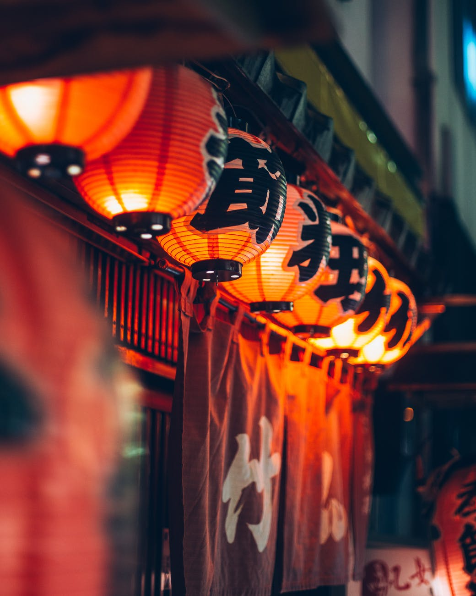
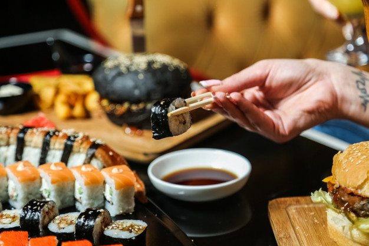
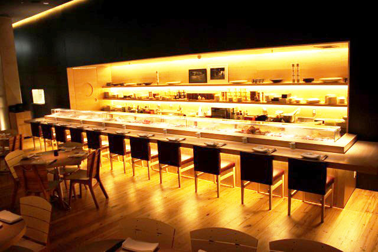

Eleito o melhor restaurante de culinária oriental do Brasil pela ALC (Associação Lucas de Culinária), o Heiwasushi (Sushi da paz, em japonês) surgiu em 2021 da necessidade de se criar um site para o treinamento dos estagiários Tech da Creditas. Estamos localizados no Shopping Metrô Itaquera, na zona leste de São Paulo.
No mesmo dia de sua inauguração, o Heiwa recebeu a pontuação internacional de 9.8 na escala LTI (Lucas' Taste Index), após uma avalação minuciosa de um comitê formado por uma pessoa (o chefe Lhuca dela Medeiri). Por conta do reconhecimento internacional, o Heiwa vem se tornando uma referência nacional rapidamente e atraindo turistas para a região.
  